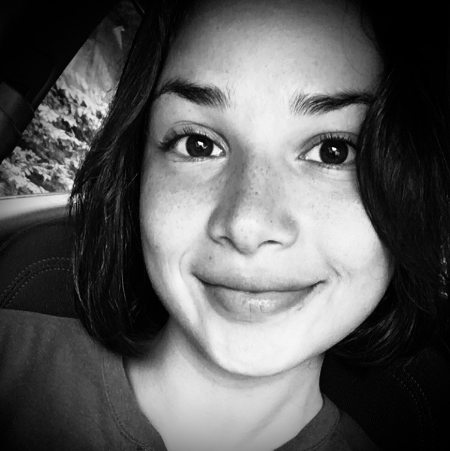

Resume

While realizing my last Master's Internship, my connection and interest for tech world increased and decided to take the opportunity of changing my career path. I dove into an unknown sector to take on new challenges and increase my chances of growing both personally and professionally.
Studies

Ironhack
Web Development - May 2021
UX UI Design - Nov 2021

La Salle
Master Social Media branding & Strategy Jul 2020